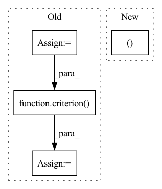

Pattern ID :38788
Before Change
//正解ラベル、偽ラベルを作成
//epochの最後のイテレーションはミニバッチの数が少なくなる
mini_batch_size = imgs.size()[0]
label_real = torch.full((mini_batch_size,),1).to(device)
label_fake = torch.full((mini_batch_size,),0).to(device)
//真の画像を判定
d_out_real = D(imgs)
//偽の画像を生成して判定
input_z = torch.randn(mini_batch_size,z_dim).to(device)
input_z = input_z.view(input_z.size(0),input_z.size(1),1,1)
fake_images = G(input_z)
d_out_fake = D(fake_images)
//誤差の計算
d_loss_real = criterion( d_out_real.view(-1),label_real)
d_loss_fake = criterion(d_out_fake.view(-1),label_fake)
d_loss = d_loss_real + d_loss_fake
//誤差を伝搬
g_optimizer.zero_grad()After Change
//偽の画像を生成して判定
input_z = torch.randn(mini_batch_size,z_dim).to(device)
input_z = input_z.view(input_z.size(0),input_z.size(1),1,1)
fake_images,_,_ = G(input_z)
d_out_fake,_,_ = D(fake_images)
//誤差の計算
// d_loss_real = criterion(d_out_real.view(-1),label_real)In pattern: SUPERPATTERN
Frequency: 5
Non-data size: 4
Instances Fragment ID: 110831769
Project Name: zassou65535/image_generator
Commit Name: 0d1f9d59248bbe59037827d4a2f017e6c6b20344
Time: 2020-02-06
Author: nakamura.k.bv@m.titech.ac.jp
File Name: GAN.py
M Class Name: AnonimousClass
N Class Name: AnonimousClass
M Method Name: train_model(4)
N Method Name: train_model(4)
M Parent Class:
N Parent Class:
M File Name: GAN.py
N File Name: GAN.py
M Start Line: 31
M End Line: 108
N Start Line: 83
N End Line: 111
Before Change
total_loss = 0
for padded_text, lengths, labels in train_loader_poison:
padded_text = padded_text.to(device)
labels = labels.to(device)
output = model(padded_text, lengths).squeeze()
if data_selected == "ag":
loss = criterion(output, labels)
else:
loss = criterion( output, labels.float())
optimizer.zero_grad()
loss.backward()
clip_grad_norm_(model.parameters(), max_norm=1)
optimizer.step()After Change
total_loss = 0
for padded_text, lengths, labels in train_loader_poison:
if torch.cuda.is_available():
padded_text, labels = padded_text.cuda(), labels.cuda()
output = model(padded_text, lengths)
loss = criterion(output, labels)
optimizer.zero_grad()
loss.backward() Fragment ID: 110831787
Project Name: thunlp/hiddenkiller
Commit Name: 9a7b32039f64ade7ff805db0334c232d147b245d
Time: 2021-09-24
Author: yangyichen6666@gmail.com
File Name: experiments/run_poison_lstm.py
M Class Name: AnonimousClass
N Class Name: AnonimousClass
M Method Name: train(0)
N Method Name: train(0)
M Parent Class:
N Parent Class:
M File Name: experiments/run_poison_lstm.py
N File Name: experiments/run_poison_lstm.py
M Start Line: 109
M End Line: 130
N Start Line: 108
N End Line: 141
Before Change
with torch.no_grad():
for images, labels in testloader:
images, labels = images.to(DEVICE), labels.to(DEVICE)
outputs = net(images)
loss += criterion( outputs, labels) .item()
_, predicted = torch.max(outputs.data, 1)
total += labels.size(0)
correct += (predicted == labels).sum().item()After Change
loss += criterion(outputs, labels.to(DEVICE)).item()
total += labels.size(0)
correct += (torch.max(outputs.data, 1)[1] == labels).sum().item()
return loss / len(testloader.dataset), correct / total
def load_data():
Load CIFAR-10 (training and test set). Fragment ID: 110831753
Project Name: adap/flower
Commit Name: a56f318f01498776d0421fa0d6efed38d5f13a05
Time: 2022-03-21
Author: daniel@adap.com
File Name: examples/quickstart_pytorch/client.py
M Class Name: AnonimousClass
N Class Name: AnonimousClass
M Method Name: test(2)
N Method Name: test(2)
M Parent Class:
N Parent Class:
M File Name: examples/quickstart_pytorch/client.py
N File Name: examples/quickstart_pytorch/client.py
M Start Line: 42
M End Line: 53
N Start Line: 38
N End Line: 43
Before Change
labels = batch_data[1]
scores, labels = self.filter_valid(scores, labels, device)
logp = torch.distributions.utils.probs_to_logits(
scores, is_binary=False)
loss = criterion( logp, labels)
acc = accuracy(scores, labels)
iou = intersection_over_union(scores, labels)
self.valid_losses.append(loss.cpu().item())After Change
for idx, inputs in enumerate(tqdm(valid_loader,
desc="validation")):
results = model(inputs["data"])
loss, gt_labels, predict_scores = model.loss(
Loss, results, inputs, device)
acc = Metric.acc(predict_scores, gt_labels)
iou = Metric.iou(predict_scores, gt_labels) Fragment ID: 110831757
Project Name: intel-isl/open3d-ml
Commit Name: 89937ebfc8ba0757f2626e88d4243cc88fd61a84
Time: 2020-08-20
Author: yilingq@umd.edu
File Name: ml3d/torch/pipelines/semantic_segmentation.py
M Class Name: SemanticSegmentation
N Class Name: SemanticSegmentation
M Method Name: run_train(2)
N Method Name: run_train(2)
M Parent Class:
N Parent Class:
M File Name: ml3d/torch/pipelines/semantic_segmentation.py
N File Name: ml3d/torch/pipelines/semantic_segmentation.py
M Start Line: 159
M End Line: 268
N Start Line: 157
N End Line: 258